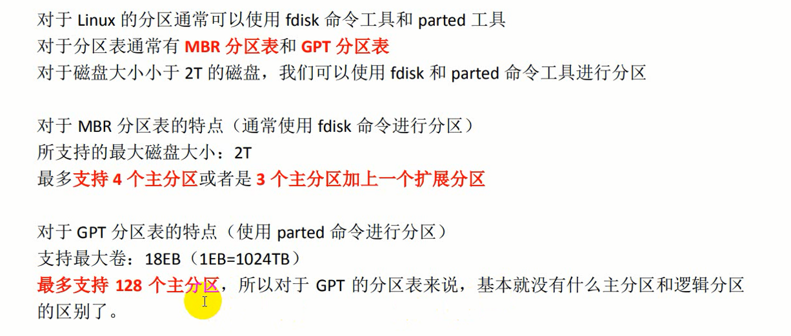

1.磁区盘分



所有的磁盘存储在Linux操作系统中都表现为一个设备文件
IDE接口的磁盘接入电脑后，会被Linux按顺序会命名为：hda、hdb、hdc。。。
SCSI/STA接口的磁盘会按顺序命名为：sda、sdb、sdc
而每个磁盘下的分区:
若第一块磁盘被命名为：hda1、hda2、hda3、hda4
则IDE接口的第二个磁盘会被命名为：hdb1、hdb2、hdb3。。。


第一题中，逻辑分区只会存在于扩展分区中，而扩展分区必然被命名为磁盘的最后一块分区（也就是隐性的hdb4），所
以他里面的逻辑分区自然就是hdb5、hdb6、hdb7.。。。。所以第一题描述是正确的。
2.磁盘格式

3.CentOS 的 目录结构：

bin是通用级别的命令，sbin是系统级别的命令，tmp是临时文件夹，文件夹的东西在重启系统时会消失

4.终端 命令提示符介绍

5.终端命令介绍

（1）cd

（2）ls

（3）mv是移动文件和重命名
如果只在当前文件夹操作 不移动到其他文件夹 那么就是简单的重命名
如果移动到其他文件夹下 则可以在该文件夹下最后取一个文件名 这样 可以达到移动并重命名的效果
（4）常用的命令

6.小技巧

7、cp和scp使用小技巧 #以下cp和scp可以相互替换，并且默认Music文件夹为空文件夹
cp -r Downloads/ Music/
#将Downloads文件夹复制到Music文件夹下，形成Music/Downloads
cp -r Downloads/ Music/aa
#将Downloads文件夹复制到Music文件夹下并重命名为aa，形成Music/aa。（前提是Music文件夹下不存在aa文件夹，否则会将Downloads文件夹复制到Music/aa文件夹下，形成Music/aa/Downloads）
cp -r Downloads/huangbo.txt Music/huangbo
#将Downloads文件夹下的huangbo.txt文件复制到Music文件夹下并重命名为huangbo
cp -r Downloads/* Music/
#将Downloads文件夹里的所有文件复制到Music文件夹下
cp -r Downloads/* Music/bb
#如果Downloads下只有一个文件（或文件夹），Music下没有bb文件(或文件夹),则会将该文件复制到Music文件夹下并重命名为bb（如果Downloads下只有一个文件cc，且bb文件本来就存在Music中，则会提醒是否将bb文件覆盖；如果Downloads下是只有一个文件夹cc，且bb文件夹本来就存在Music中，则会形成Music/bb/cc形式）。如果Downloads文件夹里面有很多文件，且bb文件夹不存在，则这种用法会报错，因为不可能在创建文件夹bb的同时再把所有文件复制到bb下。
综上所述，重命名和创建文件（或文件夹）不是一个概念，cp -r Downloads/ Music/aa 命令执行的顺序是：
（1）判断出Music下没有aa文件夹，将Downloads文件夹复制到内存中并重命名为aa文件夹
（2）将在内存中重命名好的aa文件夹移动到磁盘里的Music文件夹下，形成Music/aa
（3）清除内存中的aa文件
而不是先在Music下创建aa文件夹，再把Downloads里的所有文件复制过去。所有的移动、复制命令（cp、scp、mv）都不具备创建文件夹的权限，只有重命名的权限，只有touch和mkdir这样的正统创建新文件（或文件夹）的命令才具备创建新东西的权限。
centos所有版本官方下载地址: http://vault.centos.org/
centos6.7的64位版本的下载地址: http://vault.centos.org/6.7/isos/x86_64/
顺便说一句 VMware14需要许可证密钥，秘钥放在了这个文件里：

———————————————手写、上传资料分界线——————————————
1、第一种：txt word 不推荐
2、第二种：笔记软件： evernote-印象笔记 有道云
3、第三种：脑图 --思维导图（powdisinger， xmind），，
写博客 csdn 博客园 iteye 51cto
个人站点（自媒体） 知乎专栏， 微信公众号
学习规划：
学习过程：
1、java编程语言
面向对象（类） OOP AOP function 脚本， 静态
流程控制
集合框架
object类（hashcode equals toString notify） effective java java编程思想
IO
异常
并发 多线程
反射
网络编程
2、javaweb基础
RDBMS， mysql 非常简单和通用的技能（开发，测试，运维，DBA， 运行， 产品）
JDBC
servlet / JSP / filter / interceptor
html/css/javacript
SSM（为了让大家应付面试的）
java开发工程师（后端）
web开发工程师（前端）
javaweb工程师（前端 + 后端）
Linux操作系统（大数据的核心基础技能） 熟练使用
linux操作系统： 一周的时间
day1: 介绍linux操作系统 + 安装 + 基础使用
day2: linux操作系统的各种必会操作
day3：软件安装 + 进程管理
day4: linux shell编程
day5：linux shell的高级技能
达到的目标：数据使用linux操作系统去部署，运维， 开发一些必要的技术软件
这一周学Linux
不要再去复习javaweb
3、离线阶段(Hadoop 阶段)
Storm
4、Spark（离线，实时，.....）（应用）
第一天的核心内容： 转变观念
去掉鼠标
二分 hash散列
业务优先效率
1、先考虑业务的实现
2、再选取效率高的实现方案
windows操作系统
win XP， win7, win8, win10, win95， win97 win98 win server
Linux ： 一类操作系统的总称 Linux === GUN\LINUX 类unix操作系统
Linux ： 91年
unix ： 69年
纸片机
APP ： application 应用软件
操作系统：一种中间平台（桥梁） 连接应用软件和硬件之间的一个桥梁
硬件 ---- 操作系统 --- APP
指令 计算机组成原理 命令： 命令真实的硬件做相应的响应
计算机的常用的组成部件：
DIY 了一台台式机： computer（最开始的意义不是指计算机本身，而是指操作计算机器进行计算的人） compute
第一个计算机程序员： 女
CPU
内存
主板
输入输出设备：
输入：键盘，鼠标
输出：显示器
显卡
电源
散热器
预装
.exe mysql.exe mysq.msi , mysq.zip 这种安装方式为主
绿色版（开箱即用）
32位 4字节
64位 8节点
很宽很细的一个版线
主板：主板支持64位
32位系统安装的操作系统：4G 3.3G
摩尔定律
每隔18个月， 计算机的整体性能翻一倍
计算机的性能的纵向提升：
纵向提升
横向提升
流行的 分布式的思想
大数据 ： 分布式
ASF : apache software fundation
ibatis ： 代码被管理在 ASF
mybatis ： 谷歌
github
开源
闭源
hadoop 软件 ASF apache
cloudera 封装hadoop cdh
社区 专门用来讨论，维护 或者 升级 linux 功能的
linux操作系统 windows
mysql 开源 oracle不开源
apache各种开源软件 hadoop hive spark 全部都是来自于 apache
apache开源的顶级项目 spark hive hadoop zookeeper
大数据课程：
java作者
linux操作系统的
nignx 俄罗斯
优盘
/dev/sdb 挂载 目录：/home/hadoop/u
集成性
linux的软件会比 windows都多的多
linux操作系统中的每个软件都有唯一的确定的用户
rpm 就是用来安装软件
cd 就是用来切换目录
fdisk 就是用来给磁盘分区的
cd ls mv 软件
E:/1709--上课资料/linux-day1/资料文档/linux-part1-认识Linux.pdf
/home/hadoop/shangkeziliao/xxx.pdf
没有盘符
盘符
diskginus
windwos文件系统的两个简单的问题;
1、为什么没有A和B的盘符？
2、既然盘符是从C开始，也能够预料到最后是Z，Z之后，如果还有磁盘那么怎么办？
C-Z-A-B-没有了。
CA, CB, CC 这种方式不是正确的操作形式
当一个操作系统接满了 26个分区之后，其他的磁盘的分区也能够接入进来，但是不是普通的这种命名方式
而是必须通过挂载
linux操作系统的磁盘的管理方式：
没有盘符的概念
都必须要进行挂载操作
IPV4 ： 255 * 255 * 255 * 255
IPV6 ： 理论上
IPV9 中科院 研究出来的具有自主知识产权的网络IP协议
可以给全太阳系的每个原子都获取一个IP
192.168.140.147
255.255.255.0
外网IP
内网IP
linux和windows操作系统的文件系统的不同：
1、linux的文件系统是一颗目录树。 没有盘符的概念
windows有盘符的概念，这个盘符最多有26个
windows系统 linux系统 相对路径和决定路径
2、windows文件系统中的目录或者文件夹的名称是不区分大小写
linux是区分大小写
linux文件系统中的每个节点的取名； 大小写字母， 数字， _ ， .
lost+found
3、文件后缀名
windows文件系统有严格的文件后缀名的概念
linux文件系统没有后缀名的额概念。但是给文件取名的时候最好带上后缀名
Linux操作系统的/下的默认的各种目录的含义：
root home
bin sbin
opt usr
mnt media
lib lib64
var
proc
srv sys
etc
dev
tmp
忠告：不要修改或者删除/下的目录 。也不要在/下创建一些新的目录或者文件
命令的使用方式
1、命令提示符
[root@localhost ~] # cd /dev/
2、命令的格式
cmd [option] [args] ... [option] [args]
ls
ls -l
ls /root/
ls -l -a -h === ls -lah
3、常用的命令 归纳分类
第一类：常用的关于文件系统的各种操作
主要针对文件系统的三大类操作：
1、增删改 文件 或者 目录
2、查看 ls cat
cat tac more less head tail
3、常用的各种操作 cp mv scp
Linux新手最容易遇到的两个错：
1、No such file or directory
表示你所指定的目录或者某个文件的上级目录是不存在的
2、command not found
表示命令未找到
第一，表示命令写错
第二，环境变量配置有错
清屏
rm -rf /
rmdir remove directory
1、cat tac
2、more less
特别是less：
e y 一次挪动一行
space b 一次挪动一页
G ： 定位到文件的末尾
gg : 定位到文件的开头
3、查看指定行的内容
head tail
整个Linux的学习过程当中会有六组常用的命令：
1、rm -rf 删除目录
2、tail -f 动态查看日志文件的新追加内容
3、tar -zxvf 解压缩 .tar.gz 格式的文件
4、netstat -nltp 查看进程的进程号和端口号的对应关系
5、ps -ef | ps -aux 查看进行的启动和运行的详细信息
6、rpm -ivh 安装一个rpm格式的软件
定向符 > >>
管道符 |